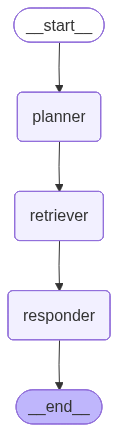

ü߆ What is Query Planning and Decomposition?#
Query Planning and Decomposition is a technique where a complex user query is broken down into simpler sub-questions or tasks, allowing a system (like a RAG agent) to:
Understand the question more deeply
Retrieve more precise and complete information
Execute step-by-step reasoning
It’s like reverse-engineering a question into manageable steps before answering.
ü߆ What‚Äôs New in This Version?
✅ Add a Query Planner Node
✅ Break complex user queries into sub-questions
✅ Retrieve docs per sub-question
✅ Combine all retrieved contexts
✅ Generate a final consolidated answer
import os
from typing import List
from pydantic import BaseModel
from langchain_openai import OpenAIEmbeddings
from langchain_core.documents import Document
from langchain_text_splitters import RecursiveCharacterTextSplitter
from langchain_community.vectorstores.faiss import FAISS
from langchain_community.document_loaders import TextLoader,WebBaseLoader
from langgraph.graph import StateGraph, END
USER_AGENT environment variable not set, consider setting it to identify your requests.
import os
from langchain_openai import ChatOpenAI
from dotenv import load_dotenv
load_dotenv()
llm = ChatOpenAI(model="gpt-4o")
# ----------------------------
# 1. Load and Embed Documents
# ----------------------------
urls = [
"https://lilianweng.github.io/posts/2023-06-23-agent/",
"https://lilianweng.github.io/posts/2024-04-12-diffusion-video/"
]
docs = []
for url in urls:
docs.extend(WebBaseLoader(url).load())
splitter = RecursiveCharacterTextSplitter(chunk_size=500, chunk_overlap=50)
chunks = splitter.split_documents(docs)
embedding = OpenAIEmbeddings()
vectorstore = FAISS.from_documents(chunks, embedding)
retriever = vectorstore.as_retriever()
# ----------------------------
# 2. State Schema
# ----------------------------
class RAGState(BaseModel):
question: str
sub_questions: List[str] = []
retrieved_docs: List[Document] = []
answer: str = ""
# ----------------------------
# 3. Nodes
# ----------------------------
## a. Query Planner: splits input question
def plan_query(state: RAGState) -> RAGState:
prompt = f"""
Break the following complex question into 2-3 sub-questions:
Question: {state.question}
Sub-questions:
"""
result = llm.invoke(prompt)
sub_questions = [line.strip("- ").strip() for line in result.content.strip().split("\n") if line.strip()]
return RAGState(question=state.question, sub_questions=sub_questions)
## b. Retrieve documents for each sub-question
def retrieve_for_each(state: RAGState) -> RAGState:
all_docs = []
for sub in state.sub_questions:
docs = retriever.invoke(sub)
all_docs.extend(docs)
return RAGState(question=state.question, sub_questions=state.sub_questions, retrieved_docs=all_docs)
## c. Generate final answer
def generate_final_answer(state: RAGState) -> RAGState:
context = "\n\n".join([doc.page_content for doc in state.retrieved_docs])
prompt = f"""
Use the context below to answer the question.
Context:
{context}
Question: {state.question}
"""
answer = llm.invoke(prompt).content
return RAGState(question=state.question, sub_questions=state.sub_questions, retrieved_docs=state.retrieved_docs, answer=answer)
# ----------------------------
# 4. Build LangGraph
# ----------------------------
builder = StateGraph(RAGState)
builder.add_node("planner", plan_query)
builder.add_node("retriever", retrieve_for_each)
builder.add_node("responder", generate_final_answer)
builder.set_entry_point("planner")
builder.add_edge("planner", "retriever")
builder.add_edge("retriever", "responder")
builder.add_edge("responder", END)
graph = builder.compile()
graph

graph
# ----------------------------
# 5. Run the pipeline
# ----------------------------
if __name__ == "__main__":
user_query = "Explain how agent loops work and what are the challenges in diffusion video generation?"
initial_state = RAGState(question=user_query)
final_state = graph.invoke(initial_state)
print(final_state)
print("\nüîç Sub-questions:")
for q in final_state['sub_questions']:
print("-", q)
print("\n✅ Final Answer:\n", final_state['answer'])
{'question': 'Explain how agent loops work and what are the challenges in diffusion video generation?', 'sub_questions': ['1. What are agent loops, and how do they function within a broader system?', '2. What are the typical challenges encountered in the process of diffusion video generation?', '3. How do agent loops specifically impact or interact with the challenges faced in diffusion video generation?'], 'retrieved_docs': [Document(id='ce937509-2fd1-4543-923c-a3b26e5dc053', metadata={'source': 'https://lilianweng.github.io/posts/2023-06-23-agent/', 'title': "LLM Powered Autonomous Agents | Lil'Log", 'description': 'Building agents with LLM (large language model) as its core controller is a cool concept. Several proof-of-concepts demos, such as AutoGPT, GPT-Engineer and BabyAGI, serve as inspiring examples. The potentiality of LLM extends beyond generating well-written copies, stories, essays and programs; it can be framed as a powerful general problem solver.\nAgent System Overview\nIn a LLM-powered autonomous agent system, LLM functions as the agent‚Äôs brain, complemented by several key components:\n\nPlanning\n\nSubgoal and decomposition: The agent breaks down large tasks into smaller, manageable subgoals, enabling efficient handling of complex tasks.\nReflection and refinement: The agent can do self-criticism and self-reflection over past actions, learn from mistakes and refine them for future steps, thereby improving the quality of final results.\n\n\nMemory\n\nShort-term memory: I would consider all the in-context learning (See Prompt Engineering) as utilizing short-term memory of the model to learn.\nLong-term memory: This provides the agent with the capability to retain and recall (infinite) information over extended periods, often by leveraging an external vector store and fast retrieval.\n\n\nTool use\n\nThe agent learns to call external APIs for extra information that is missing from the model weights (often hard to change after pre-training), including current information, code execution capability, access to proprietary information sources and more.\n\n\n\n\n\t\n\tOverview of a LLM-powered autonomous agent system.\n\nComponent One: Planning\nA complicated task usually involves many steps. An agent needs to know what they are and plan ahead.', 'language': 'en'}, page_content='Component One: Planning#\nA complicated task usually involves many steps. An agent needs to know what they are and plan ahead.\nTask Decomposition#'), Document(id='0dac6f35-ef55-4126-a273-6f1615dad4d0', metadata={'source': 'https://lilianweng.github.io/posts/2023-06-23-agent/', 'title': "LLM Powered Autonomous Agents | Lil'Log", 'description': 'Building agents with LLM (large language model) as its core controller is a cool concept. Several proof-of-concepts demos, such as AutoGPT, GPT-Engineer and BabyAGI, serve as inspiring examples. The potentiality of LLM extends beyond generating well-written copies, stories, essays and programs; it can be framed as a powerful general problem solver.\nAgent System Overview\nIn a LLM-powered autonomous agent system, LLM functions as the agent‚Äôs brain, complemented by several key components:\n\nPlanning\n\nSubgoal and decomposition: The agent breaks down large tasks into smaller, manageable subgoals, enabling efficient handling of complex tasks.\nReflection and refinement: The agent can do self-criticism and self-reflection over past actions, learn from mistakes and refine them for future steps, thereby improving the quality of final results.\n\n\nMemory\n\nShort-term memory: I would consider all the in-context learning (See Prompt Engineering) as utilizing short-term memory of the model to learn.\nLong-term memory: This provides the agent with the capability to retain and recall (infinite) information over extended periods, often by leveraging an external vector store and fast retrieval.\n\n\nTool use\n\nThe agent learns to call external APIs for extra information that is missing from the model weights (often hard to change after pre-training), including current information, code execution capability, access to proprietary information sources and more.\n\n\n\n\n\t\n\tOverview of a LLM-powered autonomous agent system.\n\nComponent One: Planning\nA complicated task usually involves many steps. An agent needs to know what they are and plan ahead.', 'language': 'en'}, page_content='The design of generative agents combines LLM with memory, planning and reflection mechanisms to enable agents to behave conditioned on past experience, as well as to interact with other agents.'), Document(id='c4100f74-4c86-4630-acbe-dc2670d2d921', metadata={'source': 'https://lilianweng.github.io/posts/2023-06-23-agent/', 'title': "LLM Powered Autonomous Agents | Lil'Log", 'description': 'Building agents with LLM (large language model) as its core controller is a cool concept. Several proof-of-concepts demos, such as AutoGPT, GPT-Engineer and BabyAGI, serve as inspiring examples. The potentiality of LLM extends beyond generating well-written copies, stories, essays and programs; it can be framed as a powerful general problem solver.\nAgent System Overview\nIn a LLM-powered autonomous agent system, LLM functions as the agent‚Äôs brain, complemented by several key components:\n\nPlanning\n\nSubgoal and decomposition: The agent breaks down large tasks into smaller, manageable subgoals, enabling efficient handling of complex tasks.\nReflection and refinement: The agent can do self-criticism and self-reflection over past actions, learn from mistakes and refine them for future steps, thereby improving the quality of final results.\n\n\nMemory\n\nShort-term memory: I would consider all the in-context learning (See Prompt Engineering) as utilizing short-term memory of the model to learn.\nLong-term memory: This provides the agent with the capability to retain and recall (infinite) information over extended periods, often by leveraging an external vector store and fast retrieval.\n\n\nTool use\n\nThe agent learns to call external APIs for extra information that is missing from the model weights (often hard to change after pre-training), including current information, code execution capability, access to proprietary information sources and more.\n\n\n\n\n\t\n\tOverview of a LLM-powered autonomous agent system.\n\nComponent One: Planning\nA complicated task usually involves many steps. An agent needs to know what they are and plan ahead.', 'language': 'en'}, page_content='Building agents with LLM (large language model) as its core controller is a cool concept. Several proof-of-concepts demos, such as AutoGPT, GPT-Engineer and BabyAGI, serve as inspiring examples. The potentiality of LLM extends beyond generating well-written copies, stories, essays and programs; it can be framed as a powerful general problem solver.\nAgent System Overview#\nIn a LLM-powered autonomous agent system, LLM functions as the agent‚Äôs brain, complemented by several key components:'), Document(id='a5749e57-67b9-4ec5-b1c8-2490bd1ce817', metadata={'source': 'https://lilianweng.github.io/posts/2023-06-23-agent/', 'title': "LLM Powered Autonomous Agents | Lil'Log", 'description': 'Building agents with LLM (large language model) as its core controller is a cool concept. Several proof-of-concepts demos, such as AutoGPT, GPT-Engineer and BabyAGI, serve as inspiring examples. The potentiality of LLM extends beyond generating well-written copies, stories, essays and programs; it can be framed as a powerful general problem solver.\nAgent System Overview\nIn a LLM-powered autonomous agent system, LLM functions as the agent‚Äôs brain, complemented by several key components:\n\nPlanning\n\nSubgoal and decomposition: The agent breaks down large tasks into smaller, manageable subgoals, enabling efficient handling of complex tasks.\nReflection and refinement: The agent can do self-criticism and self-reflection over past actions, learn from mistakes and refine them for future steps, thereby improving the quality of final results.\n\n\nMemory\n\nShort-term memory: I would consider all the in-context learning (See Prompt Engineering) as utilizing short-term memory of the model to learn.\nLong-term memory: This provides the agent with the capability to retain and recall (infinite) information over extended periods, often by leveraging an external vector store and fast retrieval.\n\n\nTool use\n\nThe agent learns to call external APIs for extra information that is missing from the model weights (often hard to change after pre-training), including current information, code execution capability, access to proprietary information sources and more.\n\n\n\n\n\t\n\tOverview of a LLM-powered autonomous agent system.\n\nComponent One: Planning\nA complicated task usually involves many steps. An agent needs to know what they are and plan ahead.', 'language': 'en'}, page_content='Boiko et al. (2023) also looked into LLM-empowered agents for scientific discovery, to handle autonomous design, planning, and performance of complex scientific experiments. This agent can use tools to browse the Internet, read documentation, execute code, call robotics experimentation APIs and leverage other LLMs.\nFor example, when requested to "develop a novel anticancer drug", the model came up with the following reasoning steps:'), Document(id='1240a736-b436-419a-a638-9c2f3267e8c6', metadata={'source': 'https://lilianweng.github.io/posts/2024-04-12-diffusion-video/', 'title': "Diffusion Models for Video Generation | Lil'Log", 'description': 'Diffusion models have demonstrated strong results on image synthesis in past years. Now the research community has started working on a harder task‚Äîusing it for video generation. The task itself is a superset of the image case, since an image is a video of 1 frame, and it is much more challenging because:\n\nIt has extra requirements on temporal consistency across frames in time, which naturally demands more world knowledge to be encoded into the model.\nIn comparison to text or images, it is more difficult to collect large amounts of high-quality, high-dimensional video data, let along text-video pairs.\n\n\n\nü•ë Required Pre-read: Please make sure you have read the previous blog on ‚ÄúWhat are Diffusion Models?‚Äù for image generation before continue here.\n', 'language': 'en'}, page_content='Adapting Image Models to Generate Videos\n\nFine-tuning on Video Data\n\nTraining-Free Adaptation\n\n\nCitation\n\nReferences\n\n\n\n\n\nDiffusion models have demonstrated strong results on image synthesis in past years. Now the research community has started working on a harder task‚Äîusing it for video generation. The task itself is a superset of the image case, since an image is a video of 1 frame, and it is much more challenging because:'), Document(id='037c7f37-27fc-41ac-8008-d59e342f076b', metadata={'source': 'https://lilianweng.github.io/posts/2024-04-12-diffusion-video/', 'title': "Diffusion Models for Video Generation | Lil'Log", 'description': 'Diffusion models have demonstrated strong results on image synthesis in past years. Now the research community has started working on a harder task‚Äîusing it for video generation. The task itself is a superset of the image case, since an image is a video of 1 frame, and it is much more challenging because:\n\nIt has extra requirements on temporal consistency across frames in time, which naturally demands more world knowledge to be encoded into the model.\nIn comparison to text or images, it is more difficult to collect large amounts of high-quality, high-dimensional video data, let along text-video pairs.\n\n\n\nü•ë Required Pre-read: Please make sure you have read the previous blog on ‚ÄúWhat are Diffusion Models?‚Äù for image generation before continue here.\n', 'language': 'en'}, page_content='In the case of video generation, we need the diffusion model to run multiple steps of upsampling for extending video length or increasing the frame rate. This requires the capability of sampling a second video $\\mathbf{x}^b$ conditioned on the first $\\mathbf{x}^a$, $\\mathbf{x}^b \\sim p_\\theta(\\mathbf{x}^b \\vert \\mathbf{x}^a)$, where $\\mathbf{x}^b$ might be an autoregressive extension of $\\mathbf{x}^a$ or be the missing frames in-between for a video $\\mathbf{x}^a$ at a low frame rate.'), Document(id='92ee3846-8988-47dc-9251-f0d8304308fa', metadata={'source': 'https://lilianweng.github.io/posts/2024-04-12-diffusion-video/', 'title': "Diffusion Models for Video Generation | Lil'Log", 'description': 'Diffusion models have demonstrated strong results on image synthesis in past years. Now the research community has started working on a harder task‚Äîusing it for video generation. The task itself is a superset of the image case, since an image is a video of 1 frame, and it is much more challenging because:\n\nIt has extra requirements on temporal consistency across frames in time, which naturally demands more world knowledge to be encoded into the model.\nIn comparison to text or images, it is more difficult to collect large amounts of high-quality, high-dimensional video data, let along text-video pairs.\n\n\n\nü•ë Required Pre-read: Please make sure you have read the previous blog on ‚ÄúWhat are Diffusion Models?‚Äù for image generation before continue here.\n', 'language': 'en'}, page_content='[12] Esser et al. 2023 ‚ÄúStructure and Content-Guided Video Synthesis with Diffusion Models.‚Äù\n[13] Bar-Tal et al. 2024 ‚ÄúLumiere: A Space-Time Diffusion Model for Video Generation.‚Äù'), Document(id='18300e82-7d35-4d98-8dd1-1bb30ab6a659', metadata={'source': 'https://lilianweng.github.io/posts/2024-04-12-diffusion-video/', 'title': "Diffusion Models for Video Generation | Lil'Log", 'description': 'Diffusion models have demonstrated strong results on image synthesis in past years. Now the research community has started working on a harder task‚Äîusing it for video generation. The task itself is a superset of the image case, since an image is a video of 1 frame, and it is much more challenging because:\n\nIt has extra requirements on temporal consistency across frames in time, which naturally demands more world knowledge to be encoded into the model.\nIn comparison to text or images, it is more difficult to collect large amounts of high-quality, high-dimensional video data, let along text-video pairs.\n\n\n\nü•ë Required Pre-read: Please make sure you have read the previous blog on ‚ÄúWhat are Diffusion Models?‚Äù for image generation before continue here.\n', 'language': 'en'}, page_content='The overview of ControlVideo. (Image source: Zhang et al. 2023)\n\nCitation#\nCited as:\n\nWeng, Lilian. (Apr 2024). Diffusion Models Video Generation. Lil‚ÄôLog. https://lilianweng.github.io/posts/2024-04-12-diffusion-video/.'), Document(id='3c84a1f9-f354-4201-a1e9-de350db64ae3', metadata={'source': 'https://lilianweng.github.io/posts/2024-04-12-diffusion-video/', 'title': "Diffusion Models for Video Generation | Lil'Log", 'description': 'Diffusion models have demonstrated strong results on image synthesis in past years. Now the research community has started working on a harder task‚Äîusing it for video generation. The task itself is a superset of the image case, since an image is a video of 1 frame, and it is much more challenging because:\n\nIt has extra requirements on temporal consistency across frames in time, which naturally demands more world knowledge to be encoded into the model.\nIn comparison to text or images, it is more difficult to collect large amounts of high-quality, high-dimensional video data, let along text-video pairs.\n\n\n\nü•ë Required Pre-read: Please make sure you have read the previous blog on ‚ÄúWhat are Diffusion Models?‚Äù for image generation before continue here.\n', 'language': 'en'}, page_content='Imagen Video also applies progressive distillation to speed up sampling and each distillation iteration can reduce the required sampling steps by half. Their experiments were able to distill all 7 video diffusion models down to just 8 sampling steps per model without any noticeable loss in perceptual quality.'), Document(id='3180060e-b8a0-4729-95cb-ffa8c8949149', metadata={'source': 'https://lilianweng.github.io/posts/2023-06-23-agent/', 'title': "LLM Powered Autonomous Agents | Lil'Log", 'description': 'Building agents with LLM (large language model) as its core controller is a cool concept. Several proof-of-concepts demos, such as AutoGPT, GPT-Engineer and BabyAGI, serve as inspiring examples. The potentiality of LLM extends beyond generating well-written copies, stories, essays and programs; it can be framed as a powerful general problem solver.\nAgent System Overview\nIn a LLM-powered autonomous agent system, LLM functions as the agent‚Äôs brain, complemented by several key components:\n\nPlanning\n\nSubgoal and decomposition: The agent breaks down large tasks into smaller, manageable subgoals, enabling efficient handling of complex tasks.\nReflection and refinement: The agent can do self-criticism and self-reflection over past actions, learn from mistakes and refine them for future steps, thereby improving the quality of final results.\n\n\nMemory\n\nShort-term memory: I would consider all the in-context learning (See Prompt Engineering) as utilizing short-term memory of the model to learn.\nLong-term memory: This provides the agent with the capability to retain and recall (infinite) information over extended periods, often by leveraging an external vector store and fast retrieval.\n\n\nTool use\n\nThe agent learns to call external APIs for extra information that is missing from the model weights (often hard to change after pre-training), including current information, code execution capability, access to proprietary information sources and more.\n\n\n\n\n\t\n\tOverview of a LLM-powered autonomous agent system.\n\nComponent One: Planning\nA complicated task usually involves many steps. An agent needs to know what they are and plan ahead.', 'language': 'en'}, page_content='}\n]\nChallenges#\nAfter going through key ideas and demos of building LLM-centered agents, I start to see a couple common limitations:'), Document(id='1240a736-b436-419a-a638-9c2f3267e8c6', metadata={'source': 'https://lilianweng.github.io/posts/2024-04-12-diffusion-video/', 'title': "Diffusion Models for Video Generation | Lil'Log", 'description': 'Diffusion models have demonstrated strong results on image synthesis in past years. Now the research community has started working on a harder task‚Äîusing it for video generation. The task itself is a superset of the image case, since an image is a video of 1 frame, and it is much more challenging because:\n\nIt has extra requirements on temporal consistency across frames in time, which naturally demands more world knowledge to be encoded into the model.\nIn comparison to text or images, it is more difficult to collect large amounts of high-quality, high-dimensional video data, let along text-video pairs.\n\n\n\nü•ë Required Pre-read: Please make sure you have read the previous blog on ‚ÄúWhat are Diffusion Models?‚Äù for image generation before continue here.\n', 'language': 'en'}, page_content='Adapting Image Models to Generate Videos\n\nFine-tuning on Video Data\n\nTraining-Free Adaptation\n\n\nCitation\n\nReferences\n\n\n\n\n\nDiffusion models have demonstrated strong results on image synthesis in past years. Now the research community has started working on a harder task‚Äîusing it for video generation. The task itself is a superset of the image case, since an image is a video of 1 frame, and it is much more challenging because:'), Document(id='037c7f37-27fc-41ac-8008-d59e342f076b', metadata={'source': 'https://lilianweng.github.io/posts/2024-04-12-diffusion-video/', 'title': "Diffusion Models for Video Generation | Lil'Log", 'description': 'Diffusion models have demonstrated strong results on image synthesis in past years. Now the research community has started working on a harder task‚Äîusing it for video generation. The task itself is a superset of the image case, since an image is a video of 1 frame, and it is much more challenging because:\n\nIt has extra requirements on temporal consistency across frames in time, which naturally demands more world knowledge to be encoded into the model.\nIn comparison to text or images, it is more difficult to collect large amounts of high-quality, high-dimensional video data, let along text-video pairs.\n\n\n\nü•ë Required Pre-read: Please make sure you have read the previous blog on ‚ÄúWhat are Diffusion Models?‚Äù for image generation before continue here.\n', 'language': 'en'}, page_content='In the case of video generation, we need the diffusion model to run multiple steps of upsampling for extending video length or increasing the frame rate. This requires the capability of sampling a second video $\\mathbf{x}^b$ conditioned on the first $\\mathbf{x}^a$, $\\mathbf{x}^b \\sim p_\\theta(\\mathbf{x}^b \\vert \\mathbf{x}^a)$, where $\\mathbf{x}^b$ might be an autoregressive extension of $\\mathbf{x}^a$ or be the missing frames in-between for a video $\\mathbf{x}^a$ at a low frame rate.')], 'answer': 'The context provided focuses on two separate areas: the functioning of LLM-powered autonomous agents and the challenges in video generation using diffusion models. Below is an explanation based on the given text:\n\n### Agent Loops in LLM-Powered Systems\n1. **Planning and Memory**: \n - The agents make use of large language models (LLMs) alongside mechanisms for memory, planning, and reflection. This setup allows them to act based on past experiences and interact with other agents effectively.\n - Task decomposition is an essential part of the agent\'s planning process, where complex tasks are broken down into manageable steps for easier execution.\n\n2. **System Overview**:\n - The LLM acts as the core "brain" of the agent, integrating with other components to facilitate its functioning.\n - As seen in applications like AutoGPT and GPT-Engineer, such agents can potentially serve as general problem solvers, performing tasks beyond generating text, such as scientific discoveries, planning, and executing complex tasks autonomously.\n\n### Challenges in Diffusion Video Generation\n1. **Complexity of Video over Images**:\n - Video generation is inherently more complex than image synthesis. While an image can be seen as a single frame video, generating a sequence that constitutes a video requires more intricate processes.\n\n2. **Diffusion Models for Video**:\n - Diffusion models need to handle multiple steps of upsampling to either extend video length or increase frame rates, a task more demanding than static image generation.\n - The model must be able to generate subsequent video frames conditioned on initial frames, represented mathematically as sampling video \\(\\mathbf{x}^b\\) based on given frames \\(\\mathbf{x}^a\\).\n\n3. **Efficiency in Sampling**:\n - Techniques such as progressive distillation are employed to make the sampling process more efficient, requiring fewer steps without compromising the quality of the video.\n\nOverall, the autonomous agents\' loop involves a systematic approach to task planning and execution with LLMs as core enablers, while diffusion models face significant computational and design challenges for effective video generation due to the increased complexity compared to static images.'}
üîç Sub-questions:
- 1. What are agent loops, and how do they function within a broader system?
- 2. What are the typical challenges encountered in the process of diffusion video generation?
- 3. How do agent loops specifically impact or interact with the challenges faced in diffusion video generation?
✅ Final Answer:
The context provided focuses on two separate areas: the functioning of LLM-powered autonomous agents and the challenges in video generation using diffusion models. Below is an explanation based on the given text:
### Agent Loops in LLM-Powered Systems
1. **Planning and Memory**:
- The agents make use of large language models (LLMs) alongside mechanisms for memory, planning, and reflection. This setup allows them to act based on past experiences and interact with other agents effectively.
- Task decomposition is an essential part of the agent's planning process, where complex tasks are broken down into manageable steps for easier execution.
2. **System Overview**:
- The LLM acts as the core "brain" of the agent, integrating with other components to facilitate its functioning.
- As seen in applications like AutoGPT and GPT-Engineer, such agents can potentially serve as general problem solvers, performing tasks beyond generating text, such as scientific discoveries, planning, and executing complex tasks autonomously.
### Challenges in Diffusion Video Generation
1. **Complexity of Video over Images**:
- Video generation is inherently more complex than image synthesis. While an image can be seen as a single frame video, generating a sequence that constitutes a video requires more intricate processes.
2. **Diffusion Models for Video**:
- Diffusion models need to handle multiple steps of upsampling to either extend video length or increase frame rates, a task more demanding than static image generation.
- The model must be able to generate subsequent video frames conditioned on initial frames, represented mathematically as sampling video \(\mathbf{x}^b\) based on given frames \(\mathbf{x}^a\).
3. **Efficiency in Sampling**:
- Techniques such as progressive distillation are employed to make the sampling process more efficient, requiring fewer steps without compromising the quality of the video.
Overall, the autonomous agents' loop involves a systematic approach to task planning and execution with LLMs as core enablers, while diffusion models face significant computational and design challenges for effective video generation due to the increased complexity compared to static images.